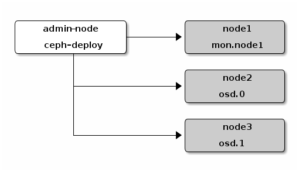

Preflight Checklist¶
New in version 0.60.
Thank you for trying Ceph! We recommend setting up a ceph-deploy admin node and a 3-node Ceph Storage Cluster to explore the basics of Ceph. This Preflight Checklist will help you prepare a ceph-deploy admin node and three Ceph Nodes (or virtual machines) that will host your Ceph Storage Cluster. Before proceeding any further, see OS Recommendations to verify that you have a supported distribution and version of Linux. When you use a single Linux distribution and version across the cluster, it will make it easier for you to troubleshoot issues that arise in production.
In the descriptions below, Node refers to a single machine.

Ceph Deploy Setup¶
Add Ceph repositories to the ceph-deploy admin node. Then, install ceph-deploy.
Advanced Package Tool (APT)¶
For Debian and Ubuntu distributions, perform the following steps:
Add the release key:
wget -q -O- 'https://ceph.com/git/?p=ceph.git;a=blob_plain;f=keys/release.asc' | sudo apt-key add -
Add the Ceph packages to your repository. Replace {ceph-stable-release} with a stable Ceph release (e.g., cuttlefish, dumpling, emperor, firefly, etc.). For example:
echo deb http://ceph.com/debian-{ceph-stable-release}/ $(lsb_release -sc) main | sudo tee /etc/apt/sources.list.d/ceph.listUpdate your repository and install ceph-deploy:
sudo apt-get update && sudo apt-get install ceph-deploy
Note
You can also use the EU mirror eu.ceph.com for downloading your packages. Simply replace http://ceph.com/ by http://eu.ceph.com/
Red Hat Package Manager (RPM)¶
For Red Hat(rhel6, rhel7), CentOS (el6, el7), and Fedora 19-20 (f19-f20) perform the following steps:
Add the package to your repository. Open a text editor and create a Yellowdog Updater, Modified (YUM) entry. Use the file path /etc/yum.repos.d/ceph.repo. For example:
sudo vim /etc/yum.repos.d/ceph.repo
Paste the following example code. Replace {ceph-release} with the recent major release of Ceph (e.g., firefly). Replace {distro} with your Linux distribution (e.g., el6 for CentOS 6, el7 for CentOS 7, rhel6 for Red Hat 6.5, rhel7 for Red Hat 7, and fc19 or fc20 for Fedora 19 or Fedora 20. Finally, save the contents to the /etc/yum.repos.d/ceph.repo file.
[ceph-noarch] name=Ceph noarch packages baseurl=http://ceph.com/rpm-{ceph-release}/{distro}/noarch enabled=1 gpgcheck=1 type=rpm-md gpgkey=https://ceph.com/git/?p=ceph.git;a=blob_plain;f=keys/release.ascUpdate your repository and install ceph-deploy:
sudo yum update && sudo yum install ceph-deploy
Note
You can also use the EU mirror eu.ceph.com for downloading your packages. Simply replace http://ceph.com/ by http://eu.ceph.com/
Ceph Node Setup¶
The admin node must be have password-less SSH access to Ceph nodes. When ceph-deploy logs in to a Ceph node as a user, that particular user must have passwordless sudo privileges.
Install NTP¶
We recommend installing NTP on Ceph nodes (especially on Ceph Monitor nodes) to prevent issues arising from clock drift. See Clock for details.
On CentOS / RHEL, execute:
sudo yum install ntp ntpdate ntp-doc
On Debian / Ubuntu, execute:
sudo apt-get install ntp
Ensure that you enable the NTP service. Ensure that each Ceph Node uses the same NTP time server. See NTP for details.
Install SSH Server¶
For ALL Ceph Nodes perform the following steps:
Install an SSH server (if necessary) on each Ceph Node:
sudo apt-get install openssh-server
or:
sudo yum install openssh-server
Ensure the SSH server is running on ALL Ceph Nodes.
Create a Ceph User¶
The ceph-deploy utility must login to a Ceph node as a user that has passwordless sudo privileges, because it needs to install software and configuration files without prompting for passwords.
Recent versions of ceph-deploy support a --username option so you can specify any user that has password-less sudo (including root, although this is NOT recommended). To use ceph-deploy --username {username}, the user you specify must have password-less SSH access to the Ceph node, as ceph-deploy will not prompt you for a password.
We recommend creating a Ceph user on ALL Ceph nodes in the cluster. A uniform user name across the cluster may improve ease of use (not required), but you should avoid obvious user names, because hackers typically use them with brute force hacks (e.g., root, admin, {productname}). The following procedure, substituting {username} for the user name you define, describes how to create a user with passwordless sudo.
Create a user on each Ceph Node.
ssh user@ceph-server sudo useradd -d /home/{username} -m {username} sudo passwd {username}For the user you added to each Ceph node, ensure that the user has sudo privileges.
echo "{username} ALL = (root) NOPASSWD:ALL" | sudo tee /etc/sudoers.d/{username} sudo chmod 0440 /etc/sudoers.d/{username}
Enable Password-less SSH¶
Since ceph-deploy will not prompt for a password, you must generate SSH keys on the admin node and distribute the public key to each Ceph node. ceph-deploy will attempt to generate the SSH keys for initial monitors.
Generate the SSH keys, but do not use sudo or the root user. Leave the passphrase empty:
ssh-keygen Generating public/private key pair. Enter file in which to save the key (/ceph-admin/.ssh/id_rsa): Enter passphrase (empty for no passphrase): Enter same passphrase again: Your identification has been saved in /ceph-admin/.ssh/id_rsa. Your public key has been saved in /ceph-admin/.ssh/id_rsa.pub.
Copy the key to each Ceph Node, replacing {username} with the user name you created with Create a Ceph User.
ssh-copy-id {username}@node1 ssh-copy-id {username}@node2 ssh-copy-id {username}@node3(Recommended) Modify the ~/.ssh/config file of your ceph-deploy admin node so that ceph-deploy can log in to Ceph nodes as the user you created without requiring you to specify --username {username} each time you execute ceph-deploy. This has the added benefit of streamlining ssh and scp usage. Replace {username} with the user name you created:
Host node1 Hostname node1 User {username} Host node2 Hostname node2 User {username} Host node3 Hostname node3 User {username}
Enable Networking On Bootup¶
Ceph OSDs peer with each other and report to Ceph Monitors over the network. If networking is off by default, the Ceph cluster cannot come online during bootup until you enable networking.
The default configuration on some distributions (e.g., CentOS) has the networking interface(s) off by default. Ensure that, during boot up, your network interface(s) turn(s) on so that your Ceph daemons can communicate over the network. For example, on Red Hat and CentOS, navigate to /etc/sysconfig/network-scripts and ensure that the ifcfg-{iface} file has ONBOOT set to yes.
Ensure Connectivity¶
Ensure connectivity using ping with short hostnames (hostname -s). Address hostname resolution issues as necessary.
Note
Hostnames should resolve to a network IP address, not to the loopback IP address (e.g., hostnames should resolve to an IP address other than 127.0.0.1). If you use your admin node as a Ceph node, you should also ensure that it resolves to its hostname and IP address (i.e., not its loopback IP address).
Open Required Ports¶
Ceph Monitors communicate using port 6789 by default. Ceph OSDs communicate in a port range of 6800:7300 by default. See the Network Configuration Reference for details. Ceph OSDs can use multiple network connections to communicate with clients, monitors, other OSDs for replication, and other OSDs for heartbeats.
On some distributions (e.g., RHEL), the default firewall configuration is fairly strict. You may need to adjust your firewall settings allow inbound requests so that clients in your network can communicate with daemons on your Ceph nodes.
For firewalld on RHEL 7, add port 6789 for Ceph Monitor nodes and ports 6800:7300 for Ceph OSDs to the public zone and ensure that you make the setting permanent so that it is enabled on reboot. For example:
sudo firewall-cmd --zone=public --add-port=6789/tcp --permanent
For iptables, add port 6789 for Ceph Monitors and ports 6800:7300 for Ceph OSDs. For example:
sudo iptables -A INPUT -i {iface} -p tcp -s {ip-address}/{netmask} --dport 6789 -j ACCEPT
Once you have finished configuring iptables, ensure that you make the changes persistent on each node so that they will be in effect when your nodes reboot. For example:
/sbin/service iptables save
TTY¶
On CentOS and RHEL, you may receive an error while trying to execute ceph-deploy commands. If requiretty is set by default on your Ceph nodes, disable it by executing sudo visudo and locate the Defaults requiretty setting. Change it to Defaults:ceph !requiretty or comment it out to ensure that ceph-deploy can connect using the user you created with Create a Ceph User.
Note
If editing, /etc/sudoers, ensure that you use sudo visudo rather than a text editor.
SELinux¶
On CentOS and RHEL, SELinux is set to Enforcing by default. To streamline your installation, we recommend setting SELinux to Permissive or disabling it entirely and ensuring that your installation and cluster are working properly before hardening your configuration. To set SELinux to Permissive, execute the following:
sudo setenforce 0
To configure SELinux persistently (recommended if SELinux is an issue), modify the configuration file at /etc/selinux/config.
Priorities/Preferences¶
Ensure that your package manager has priority/preferences packages installed and enabled. On CentOS, you may need to install EPEL. On RHEL, you may need to enable optional repositories.
sudo yum install yum-plugin-priorities
For example, on RHEL 7 server, execute the following to install yum-plugin-priorities and enable the rhel-7-server-optional-rpms repository:
sudo yum install yum-plugin-priorities --enablerepo=rhel-7-server-optional-rpms
Summary¶
This completes the Quick Start Preflight. Proceed to the Storage Cluster Quick Start.